Principal Investigator
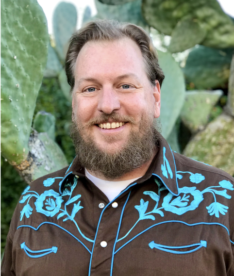
Dr. Greg Barron-Gafford
Professor, SGDE; Biosphere 2, UArizona
Leads SALSA. Research in biogeography, plant ecology, climate change impacts, and agrivoltaics. Pioneering FEW nexus solutions.
Key Contributors
Meet the dedicated researchers, students, and collaborators driving the SALSA initiatives at the University of Arizona and our partner institutions.
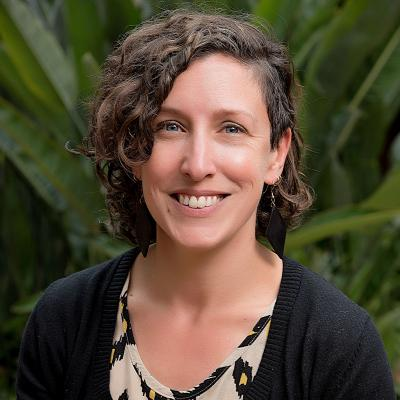
Dr. Christine Lamanna
Research Scientist - AgriFood Systems
Focuses on climate change adaptation in agriculture and agroforestry. Uses evidence synthesis to inform policy for smallholder farmers.
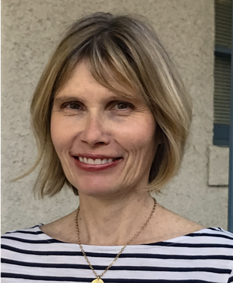
Dr. Andrea Gerlak
Professor, SGDE; Director, Udall Center, UArizona
Focuses on water governance, environmental policy, equity, institutional change, and adaptation. Co-PI on the AZ Utility-scale Agrivoltaics Learning Lab, leading socio-politcal research.
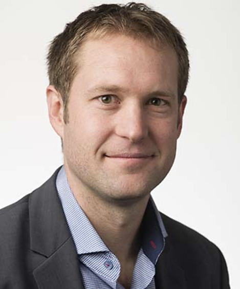
Jordan Macknick
Lead Energy-Water-Land Analyst, NREL
Expert in environmental impacts of energy tech, energy-ecology synergies, and agrivoltaics. Leads NREL's InSPIRE project.
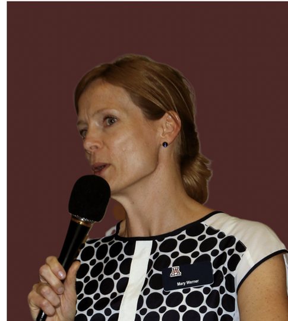
Mary Werner
Research Program Admin, SGDE, UArizona
Manages research programs and administrative aspects within the Barron-Gafford lab and SGDE.
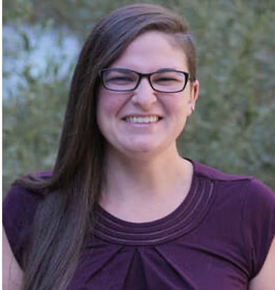
Dr. Holly Andrews
Assistant Professor, Louisiana State University / Former SALSA Postdoctoral Researcher
Leads research on biosphere-atmosphere interactions and soil characterization across agrivoltaic projects
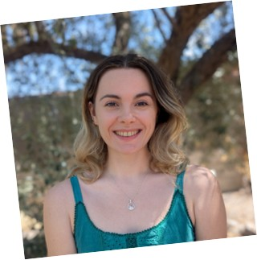
Tali Neesham-McTiernan
PhD Candidate, SGDE & B2, UArizona
Merges biophysical and social sciences to map areas suitable for agrivoltaics and capture the potential for agrivoltaics to create safer farm working conditions
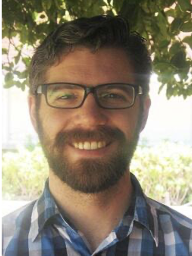
Patrick Murphy
Research Specialist, SGDE & B2, UArizona
Contributes to research efforts within the Barron-Gafford lab at Biosphere 2, focusing on agrivoltaics and related ecological studies.
Ingrid Holstrom
Research Professional
Coordinates field research, manages environmental monitoring datasets for agrivoltaic sites in Arizona

Nesrine Rouini
Senior Research Specialist and Graduate Student
Leads field plant ecophysiological research across Arizona and Colorado and manages undergraduate Research Assistants

Zoe Gineris
Undergraduate Research Assistant
Leads Honors Thesis project on how soil moisture differentially impacts rates of decomposition within agrivoltaic systems
SALSA Alumni
We're proud of our former team members who continue to make an impact in their fields.
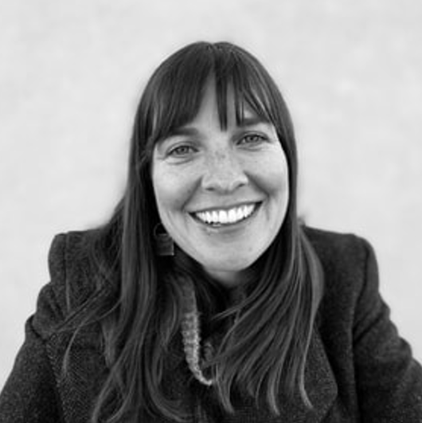
Dr. Carrie Seay-Fleming
Postdoctoral Research Assoc., Udall Center & SGDE, UArizona
Environmental sociologist focusing on food system transformations, land-use conflict, and social aspects of solar development.
Tyler Swanson
Graduate Research Assistant, Udall Center & SGDE, UArizona
M.A. student studying social aspects of agrivoltaics, agritourism, and energy policy for sustainable rural development.
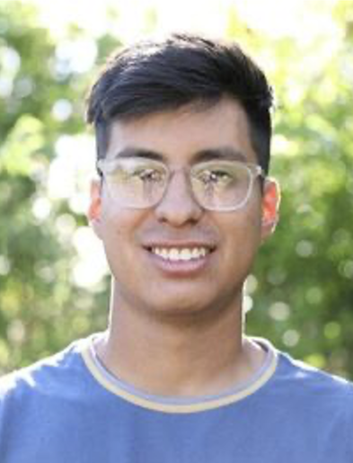
Caleb Ortega
Program Coordinator, B2 & SGDE, UArizona
Coordinates UA Community and School Garden Program. Supports agrivoltaics research at Biosphere 2 and local schools.
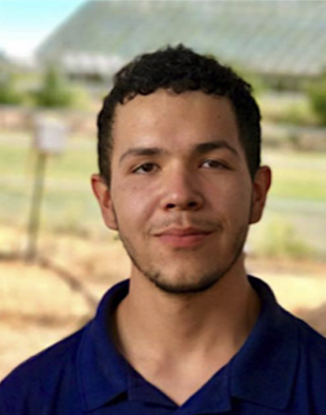
Isaiah Barnett-Moreno
Undergrad Research Asst. & Farm Manager, UArizona/PCC
Manages research farm operations, involved in agrivoltaics research at Biosphere 2, and works with aquaponics for food accessibility.
Team Summary
| Contributor Name | Affiliation | Area of Expertise / Role |
|---|---|---|
| Dr. Greg Barron-Gafford | UArizona (SGDE, Biosphere 2) | Agrivoltaics, Biogeography, Plant Ecology, FEW Nexus |
| Dr. Christine Lamanna | AgriFood Systems | Climate Change Adaptation, Agroforestry, Evidence Synthesis |
| Dr. Andrea Gerlak | UArizona (SGDE, Udall Center) | Water Governance, Environmental Policy, Socio-political Research |
| Jordan Macknick | NREL | Energy-Water-Land Analysis, Agrivoltaics (InSPIRE) |
| Mary Werner | UArizona (SGDE) | Research Program Administration |
| Dr. Holly Andrews | Louisiana State University | Biosphere-Atmosphere Interactions, Soil Characterization |
| Tali Neesham-McTiernan | UArizona (SGDE, Biosphere 2) | Agrivoltaics Mapping, Biophysical & Social Science Modeling |
| Patrick Murphy | UArizona (SGDE, Biosphere 2) | Research Support, Agrivoltaics Lab |
| Ingrid Holstrom | UArizona | Research Professional, Field Research Coordination |
| Nesrine Rouini | UArizona | Senior Research Specialist, Plant Ecophysiology |
| Zoe Gineris | UArizona | Undergraduate Research, Decomposition & Soil Moisture |